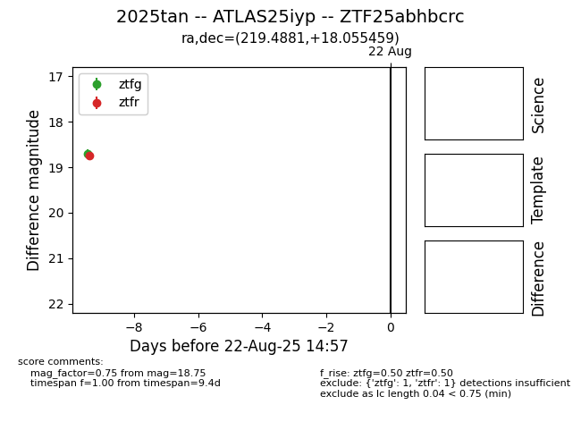

Target 2025tan at 2025-08-22 18:16, see:
FINK: fink-portal.org/ZTF25abhbcrc
Lasair: lasair-ztf.lsst.ac.uk/objects/ZTF25abhbcrc
ALeRCE: alerce.online/object/ZTF25abhbcrc
TNS: wis-tns.org/object/2025tan
YSE: ziggy.ucolick.org/yse/transient_detail/2025tan
alt names
ZTF25abhbcrc (ztf,alerce)
2025tan (tns,yse)
ATLAS25iyp (atlas)
coordinates:
equatorial (ra, dec) = (219.4881,+18.05546)
galactic (l, b) = (18.2432,+63.86214)
photometry
last ztfg=18.71, ztfr=18.75
1 ztfg, 1 ztfr detections
